-
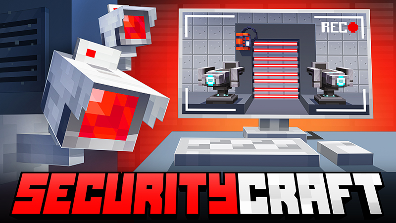
SecurityCraft 🛡️ : Mod orienté sur la protection et la sécurité dans Minecraft.
Description : SecurityCraft offre une panoplie d'outils et dispositifs de sécurité comme des caméras de surveillance, lasers, serrures, et plus encore pour renforcer vos bases.
Fonctionnalités principales :
- Caméras de surveillance.
- Lasers et pièges.
- Serrures et claviers.
- Capteurs et dispositifs d'alarme.
-
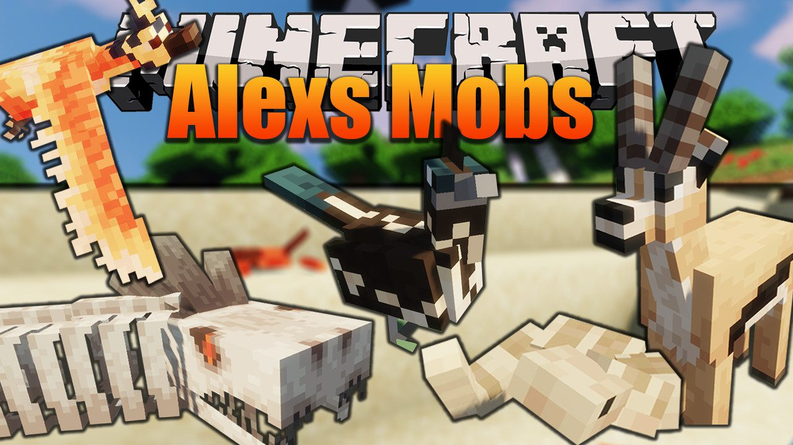
Alex's Mobs 🦄 : Ajoute une vaste collection de nouveaux mobs réalistes et fantastiques.
Description : Alex's Mobs enrichit la faune de Minecraft avec plus de 70 nouveaux mobs, chacun ayant des comportements uniques et interagissant avec l'environnement et le joueur.
Fonctionnalités principales :
- Plus de 70 nouveaux mobs diversifiés.
- Comportements et interactions réalistes.
- Écosystèmes enrichis et équilibrés.
- Items et drops uniques provenant de chaque mob.
-
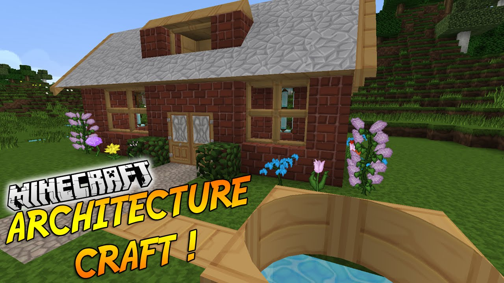
Architectury 🏗️ : Bibliothèque de code pour améliorer la compatibilité et le développement des mods.
Description : Architectury fournit des outils et des API communs pour faciliter le travail des moddeurs et la compatibilité entre différentes versions de Minecraft.
Fonctionnalités principales :
- Compatibilité inter-version des mods.
- API unifiée pour le développement.
- Documentation et support étendus pour les moddeurs.
- Intégration avec de nombreux autres mods.
-
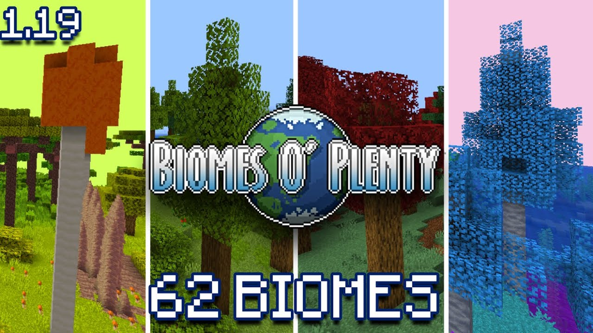
Biomes O' Plenty 🌳 : Ajoute une variété de nouveaux biomes magnifiques et variés.
Description : Biomes O' Plenty enrichit l'expérience de jeu avec des dizaines de nouveaux biomes terrestres et aquatiques, chacun offrant des ressources et des décors uniques.
Fonctionnalités principales :
- Des dizaines de nouveaux biomes.
- Plantes, arbres et blocs exclusifs.
- Créatures et mobs spécifiques à certains biomes.
- Ambiances et écosystèmes diversifiés.
-
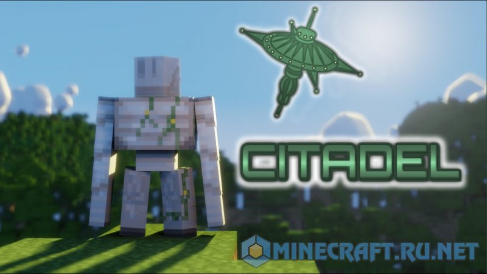
Citadel 🏰 : Bibliothèque essentielle pour le fonctionnement d'autres mods liés aux créatures.
Description : Citadel fournit les bases nécessaires pour gérer les entités complexes et leurs comportements, supportant divers mods de créatures et de faune.
Fonctionnalités principales :
- Support pour les entités complexes.
- API pour la gestion des mobs.
- Intégration facile avec d'autres mods.
- Documentation complète pour les développeurs.
-
 Create Enchantment Industry ⚙️ : Intègre de nouvelles possibilités d'enchantements et de mécanismes industriels.
Create Enchantment Industry ⚙️ : Intègre de nouvelles possibilités d'enchantements et de mécanismes industriels.
Description : Create Enchantment Industry enrichit les options disponibles pour les joueurs souhaitant optimiser leurs créations et équipements avec de nouveaux enchantements industriels et machines avancées.
Fonctionnalités principales :
- Nouveaux enchantements industriels.
- Machines et mécanismes avancés.
- Automatisation des processus d'enchantement.
- Compatibilité avec le mod Create.
-
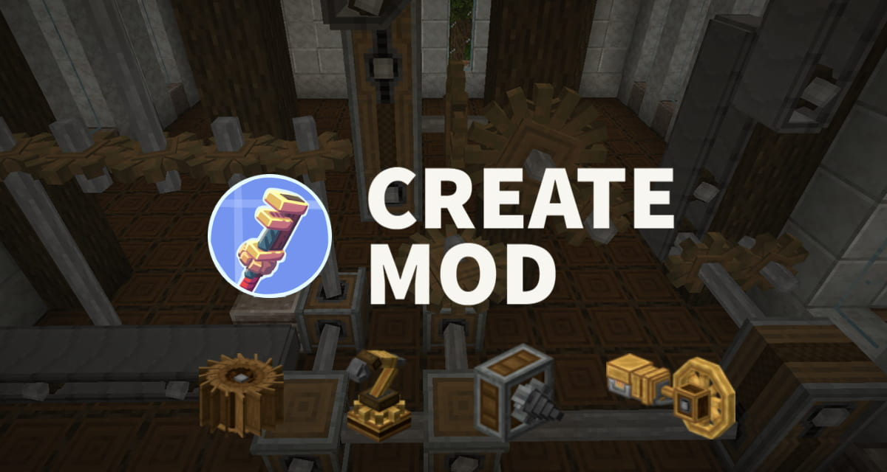
Create 🏭 : Introduit des machines complexes et des mécanismes pour automatiser la construction et les processus industriels.
Description : Create offre une nouvelle dimension de créativité et d'ingéniosité technique avec des machines et systèmes d'engrenages, permettant l'automatisation et la production à grande échelle.
Fonctionnalités principales :
- Machines et systèmes d'engrenages.
- Chaînes de montage et de production automatisées.
- Compatibilité avec d'autres mods.
- Tutoriels et documentation pour les constructions complexes.
-
 Create Stuff Additions 🔧 : Étend le mod Create avec de nouveaux éléments et fonctionnalités pour encore plus de possibilités.
Create Stuff Additions 🔧 : Étend le mod Create avec de nouveaux éléments et fonctionnalités pour encore plus de possibilités.
Description : Create Stuff Additions est une extension du mod Create, ajoutant de nouveaux éléments et fonctionnalités pour encore plus de possibilités créatives et industrielles dans Minecraft.
Fonctionnalités principales :
- Éléments supplémentaires pour les machines Create.
- Nouveaux mécanismes et outils industriels.
- Compatibilité et intégration avec le mod Create.
- Possibilités accrues d'automatisation et de construction.
-
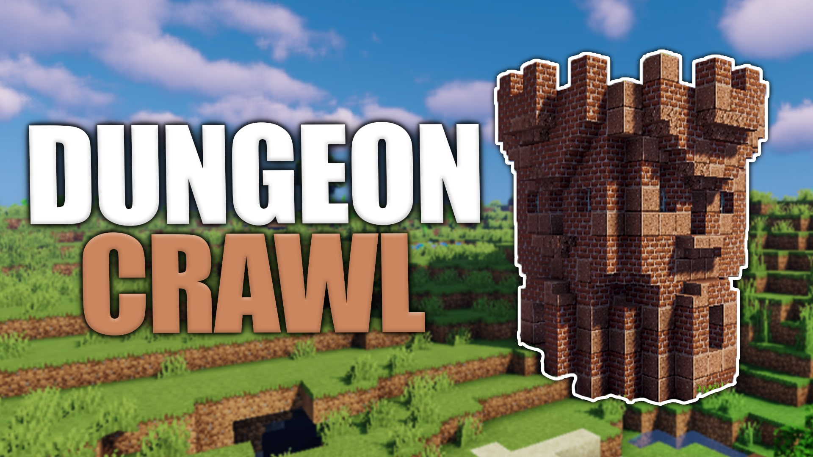
Dungeon Crawl 🏰 : Remplit le monde de donjons complexes et excitants à explorer.
Description : Dungeon Crawl ajoute des donjons générés aléatoirement, offrant des défis et des récompenses pour les aventuriers intrépides. Les donjons sont remplis d'ennemis, de pièges et de trésors cachés, offrant une expérience d'exploration enrichie.
Fonctionnalités principales :
- Donjons générés aléatoirement.
- Ennemis et pièges variés.
- Trésors et récompenses cachés.
- Exploration et aventure améliorées.
-
 Guard Villagers 🛡️ : Ajoute des gardes villageois pour protéger les villages.
Guard Villagers 🛡️ : Ajoute des gardes villageois pour protéger les villages.
Description : Guard Villagers améliore la défense des villages en ajoutant des gardes villageois armés qui protègent les habitants contre les menaces comme les pillards. Les gardes patrouillent et défendent activement les villages, renforçant leur sécurité.
Fonctionnalités principales :
- Gardes villageois armés.
- Comportements défensifs et patrouilles.
- Protection contre les pillards et autres menaces.
- Interactions avec les villageois et le joueur.
-
 Immersive Aircraft ✈️ : Permet de construire et piloter des avions immersifs.
Immersive Aircraft ✈️ : Permet de construire et piloter des avions immersifs.
Description : Immersive Aircraft permet aux joueurs de construire et de piloter des avions réalistes, offrant une nouvelle dimension de transport aérien dans Minecraft. Les avions peuvent être personnalisés et utilisés pour explorer et transporter des ressources.
Fonctionnalités principales :
- Construction et personnalisation d'avions.
- Mécanismes de vol réalistes.
- Compatibilité avec les environnements de jeu.
- Exploration et transport aérien améliorés.
-
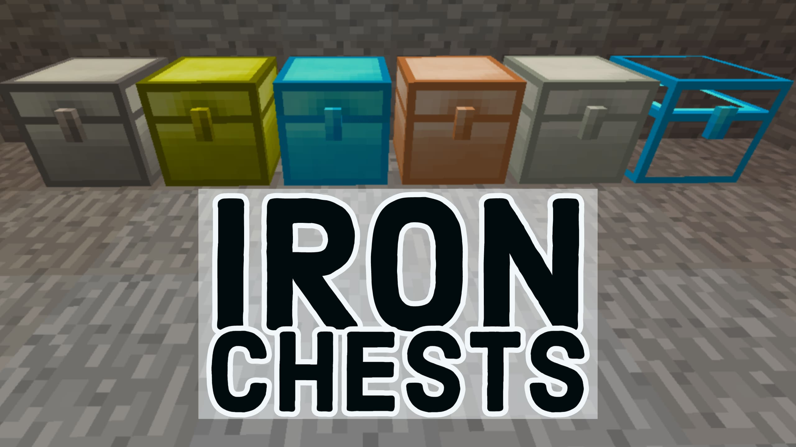
IronChest 🧰 : Introduit des coffres de différentes tailles et capacités pour améliorer le stockage.
Description : IronChest offre des solutions de rangement efficaces avec des coffres de différents matériaux et capacités. Les joueurs peuvent utiliser ces coffres pour organiser leurs ressources de manière plus modulaire et esthétique.
Fonctionnalités principales :
- Coffres de divers matériaux (fer, or, diamant, etc.).
- Capacités de stockage variées.
- Compatibilité avec d'autres systèmes de stockage.
- Organisation et gestion des ressources optimisées.
-
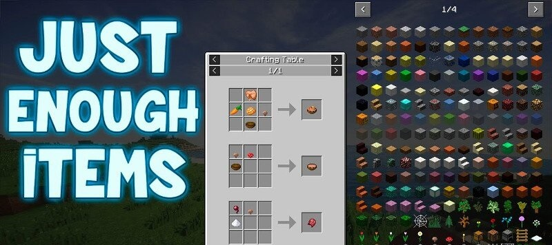
Just Enough Items (JEI) 📜 : Outil indispensable pour voir les recettes de crafting et les objets disponibles.
Description : JEI facilite la gestion des matériaux et la création d'objets en affichant les recettes de crafting et les objets disponibles dans Minecraft. Il offre une interface utilisateur simple et intuitive pour rechercher et naviguer à travers les items.
Fonctionnalités principales :
- Affichage des recettes de crafting.
- Recherche et navigation aisée des items.
- Intégration avec de nombreux autres mods.
- Interface utilisateur simple et intuitive.
-
 Just Hammers 🔨 : Ajoute des marteaux puissants pour miner plus efficacement.
Just Hammers 🔨 : Ajoute des marteaux puissants pour miner plus efficacement.
Description : Just Hammers permet de casser des blocs plus rapidement et sur une plus grande surface grâce à divers types de marteaux avec des niveaux de puissance différents, améliorant l'efficacité minière.
Fonctionnalités principales :
- Divers types de marteaux avec des niveaux de puissance différents.
- Minage sur une surface de 3x3 blocs.
- Durabilité et enchantements spécifiques.
- Amélioration de l'efficacité minière.
-
 Player Revive ❤️ : Permet de réanimer les joueurs tombés au combat.
Player Revive ❤️ : Permet de réanimer les joueurs tombés au combat.
Description : Player Revive ajoute une dimension coopérative et stratégique aux aventures en groupe en permettant de réanimer les joueurs tombés au combat. Les mécanismes de réanimation sont configurables et renforcent la coopération.
Fonctionnalités principales :
- Mécanismes de réanimation des joueurs.
- Temps et conditions de réanimation configurables.
- Interactions et coopération renforcées.
- Compatibilité avec d'autres mods multijoueurs.
-
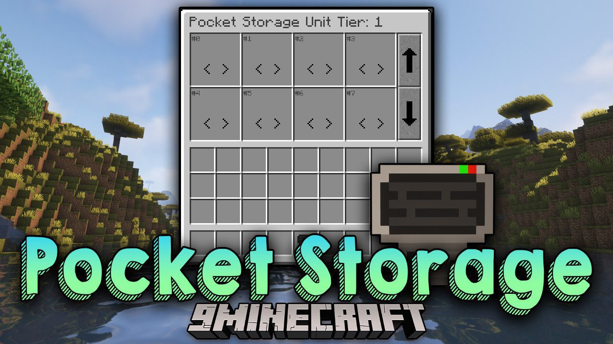
Pocket Storage 📦 : Offre des solutions de stockage portables pour garder vos objets organisés et accessibles.
Description : Pocket Storage permet aux joueurs de transporter plus d'objets lors de leurs aventures grâce à des conteneurs de stockage portables, facilitant la gestion des ressources en déplacement.
Fonctionnalités principales :
- Conteneurs de stockage portables.
- Capacités de rangement variées.
- Accès rapide et facile aux objets.
- Compatibilité avec d'autres systèmes de stockage.
-
 Simple Shops 🛒 : Permet de créer et gérer des boutiques pour échanger des biens avec d'autres joueurs.
Simple Shops 🛒 : Permet de créer et gérer des boutiques pour échanger des biens avec d'autres joueurs.
Description : Simple Shops facilite le commerce et l'économie en jeu en permettant de créer et gérer des boutiques personnalisées. L'interface utilisateur intuitive simplifie les transactions et le commerce multijoueur.
Fonctionnalités principales :
- Création et gestion de boutiques personnalisées.
- Interface utilisateur intuitive pour les transactions.
- Compatibilité avec divers items et ressources.
- Support pour les serveurs multijoueurs.
-
 Storage Drawers 🗄️ : Introduit des tiroirs de rangement pour mieux organiser vos ressources.
Storage Drawers 🗄️ : Introduit des tiroirs de rangement pour mieux organiser vos ressources.
Description : Storage Drawers offre une solution de stockage modulaire et esthétique avec des tiroirs de différentes tailles et capacités. Les joueurs peuvent facilement organiser et accéder à leurs ressources.
Fonctionnalités principales :
- Tiroirs de différentes tailles et capacités.
- Modules de mise à niveau et d'amélioration.
- Organisation visuelle et accès rapide aux ressources.
- Compatibilité avec d'autres systèmes de stockage.
-
 Terra Blender 🌍 : Améliore le terrain et le mélange des biomes.
Terra Blender 🌍 : Améliore le terrain et le mélange des biomes.
Description : Terra Blender offre des paysages plus naturels et harmonieux en améliorant la génération de terrain et la transition entre les biomes, créant des environnements esthétiques et immersifs dans Minecraft.
Fonctionnalités principales :
- Algorithmes de génération de terrain avancés.
- Transition fluide entre différents biomes.
- Environnements naturels et esthétiques.
- Compatibilité avec d'autres mods de biomes.
-
 Traveler's Backpack 🎒 : Ajoute des sacs à dos fonctionnels pour transporter plus d'objets.
Traveler's Backpack 🎒 : Ajoute des sacs à dos fonctionnels pour transporter plus d'objets.
Description : Traveler's Backpack offre une solution de stockage pratique et mobile avec des sacs à dos ayant des capacités de stockage variées. Les sacs à dos possèdent également des fonctionnalités supplémentaires comme les réservoirs de liquide.
Fonctionnalités principales :
- Sacs à dos avec capacités de stockage variées.
- Fonctionnalités supplémentaires comme les réservoirs de liquide.
- Interface utilisateur intuitive pour la gestion des objets.
- Compatibilité avec d'autres systèmes de stockage.
-
 Vanilla Refresh 🍦 : Apporte des améliorations et des mises à jour aux éléments classiques de Minecraft.
Vanilla Refresh 🍦 : Apporte des améliorations et des mises à jour aux éléments classiques de Minecraft.
Description : Vanilla Refresh modernise le jeu sans en altérer l'essence, avec des améliorations visuelles, de nouveaux blocs et objets inspirés du jeu original, ainsi que des optimisations de gameplay et de performance.
Fonctionnalités principales :
- Améliorations visuelles et graphiques.
- Nouveaux blocs et objets inspirés du jeu original.
- Optimisations de gameplay et de performance.
- Compatibilité avec d'autres mods améliorant le jeu de base.
-
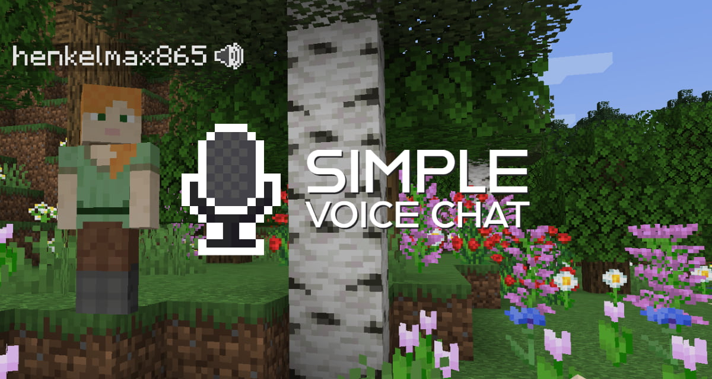
Simple Voice Chat 🎙️ : Intègre un chat vocal simple pour communiquer avec les autres joueurs.
Description : Simple Voice Chat améliore la coordination et l'interaction en jeu en offrant une fonctionnalité de chat vocal intégrée avec des options de réglage. La qualité sonore est claire et stable, et le chat vocal est compatible avec les serveurs multijoueurs.
Fonctionnalités principales :
- Chat vocal intégré avec options de réglage.
- Qualité sonore claire et stable.
- Compatibilité avec les serveurs multijoueurs.
- Facilité d'utilisation et d'installation.
-
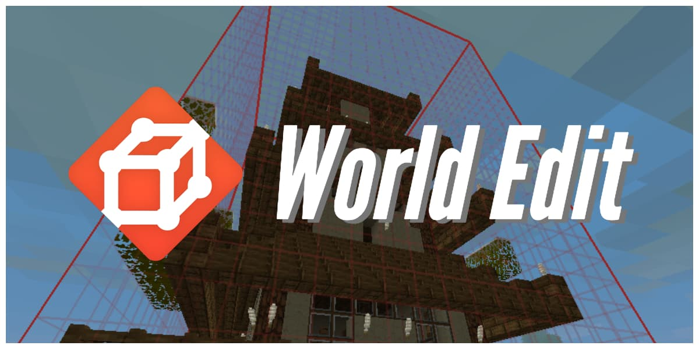
World Edit 🛠️ : Outil puissant pour modifier et personnaliser le terrain rapidement.
Description : World Edit offre des possibilités de construction et de terraformation étendues grâce à ses outils de sélection et d'édition de terrain. Les joueurs peuvent utiliser des commandes avancées pour modifier rapidement et efficacement le terrain, rendant les projets de grande échelle plus gérables.
Fonctionnalités principales :
- Outils de sélection et d'édition de terrain.
- Commandes avancées pour la construction et la modification.
- Compatibilité avec des projets de grande échelle.
- Documentation et support pour les utilisateurs avancés.
-
 Xaero's Minimap 🗺️ : Ajoute une mini-carte pratique pour naviguer et explorer le monde.
Xaero's Minimap 🗺️ : Ajoute une mini-carte pratique pour naviguer et explorer le monde.
Description : Xaero's Minimap offre une vue d'ensemble du terrain et des structures environnantes grâce à une mini-carte personnalisable avec options de zoom. Les joueurs peuvent marquer des points d'intérêt et naviguer plus facilement dans le monde.
Fonctionnalités principales :
- Mini-carte personnalisable avec options de zoom.
- Marqueurs et waypoints pour les points d'intérêt.
- Compatibilité avec d'autres mods de navigation.
- Interface utilisateur intuitive et informative.
-
 Yung's API 📚 : API essentielle pour faire fonctionner divers autres mods de Yung.
Yung's API 📚 : API essentielle pour faire fonctionner divers autres mods de Yung.
Description : Yung's API fournit les bases nécessaires pour la création et l'intégration de contenus avancés dans les mods de Yung. Cette API supporte les fonctionnalités et les entités complexes, offrant une compatibilité étendue avec d'autres mods.
Fonctionnalités principales :
- API de base pour les mods de Yung.
- Support pour les fonctionnalités et les entités complexes.
- Documentation et exemples pour les développeurs.
- Compatibilité étendue avec d'autres mods.
-
 Yung's Better Dungeons 🏰 : Introduit des donjons améliorés et plus complexes à explorer.
Yung's Better Dungeons 🏰 : Introduit des donjons améliorés et plus complexes à explorer.
Description : Yung's Better Dungeons offre des donjons détaillés avec des designs uniques, remplis d'ennemis, de boss et de trésors. Les joueurs peuvent explorer ces donjons pour relever des défis plus grands et vivre des aventures plus riches.
Fonctionnalités principales :
- Donjons détaillés avec des designs uniques.
- Ennemis et boss variés et redoutables.
- Trésors et récompenses cachés.
- Compatibilité avec d'autres mods d'exploration.
-
 Modspack 📁 : Le modspack officiel du serveur SMP !
Modspack 📁 : Le modspack officiel du serveur SMP !
Téléchargez : Pour jouer au serveur, il vous faudra le modspack